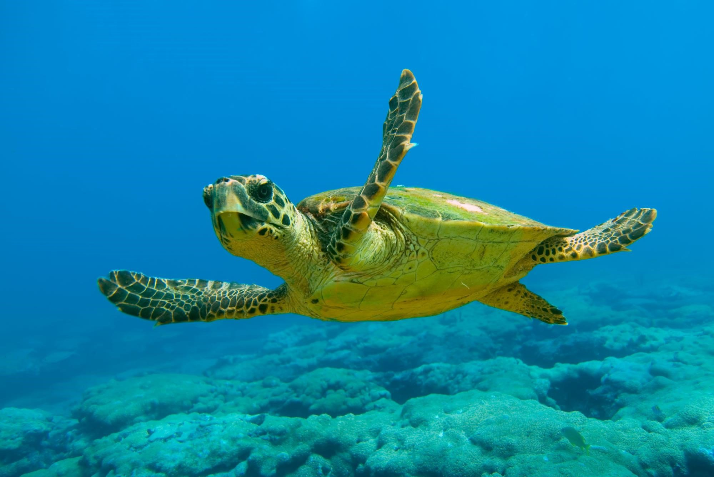

Tα γιγάντια Πάντα, που κατοικούν στην κεντροδυτική και νοτιοδυτική Κίνα. Ζούνε 20 χρόνια και αν και κατατάσσονται στην τάξη των Σαρκοφάγων τρέφεται κατά 99% με μπαμπού. Ανακύρηχθηκαν είδη υπό εξαφάνιση από το 1990. Όλα ξεκίνησαν με την κοπή των δέντρων Μπαμπού, που τα ανάγκασε να μεταναστεύουν μέσα στο δάσος όλο και περισσότερο. Στην συνέχεια, η κατασκευή δρόμων και η γενική εξαφάνιση του βιοτόπου τους, τα δυσκόλεψε στην προσαρμογή ρίχνοντας τον πληθυσμό τους στα 1.864 παγκοσμίως.

Η Καρέτα Καρέτα βρίσκεται κυρίως στην Μεσόγειο και το 2001 το είδος τους κηρύχθηκε υπό εξαφάνιση. Η χελώνα αυτή βρίσκεται υπό εξαφάνιση κυρίως καθώς 1 στα 1000 μικρά χελωνάκια φτάνει στην ενηλικίωση. Πιο συγκεκριμένα: τα νεογέννητα χελωνάκια αποπροσανατολίζονται από τα φώτα του δρόμου και δεν φτάνουν στην θάλασσα αφού δεν λαμβάνουν καθοδήγηση από την μητέρα τους και έτσι μόνο μικρό μέρος των νεογέννητων φτάνει στην θάλασσα. Παράλληλα, πουλιά και άλλα ζώα επιτίθενται σε φωλιές ενώ στο νερό, μεγαλύτερα ψάρια Επίσης, το μέρος με τις περισσότερες χελώνες καρέτα καρέτα στον κόσμο, η Ζάκυνθος, υπέστη φυσική καταστροφή το 1999. Μάλιστα, πιο πρόσφατες μελέτες εξηγούν πως η θερμοκρασία του περιβάλλοντος στο οποίο βρίσκονται τα αυγά τους καθορίζει το φύλο τους: άρα λόγω της κλιματικής αλλαγή υπάρχει η ανησυχία ότι δεν θα υπάρχουν αρκετά του ενός φύλου για αναπαραγωγή.
Ο Λευκοκέφαλος Αετός βρίσκεται κυρίως στην Βόρεια Αμερική (ΗΠΑ, Καναδάς, Αλάσκα, Βόρειο Μεξικό). Το 1967 το είδος τους κηρύχθηκε υπό εξαφάνιση καθώς από τις 100,000 φωλιές που μετρήθηκαν όταν ο αετός ονομάστηκε το επίσημο σύνολο των ΗΠΑ, το 1967 είχαν διατηρηθεί μόνο 471. Η κυβέρνηση υποψιάζεται πως η ραγδαία αυτή μείωση των αετών οφείλεται στο παράνομο κυνήγι και εμπόριο.